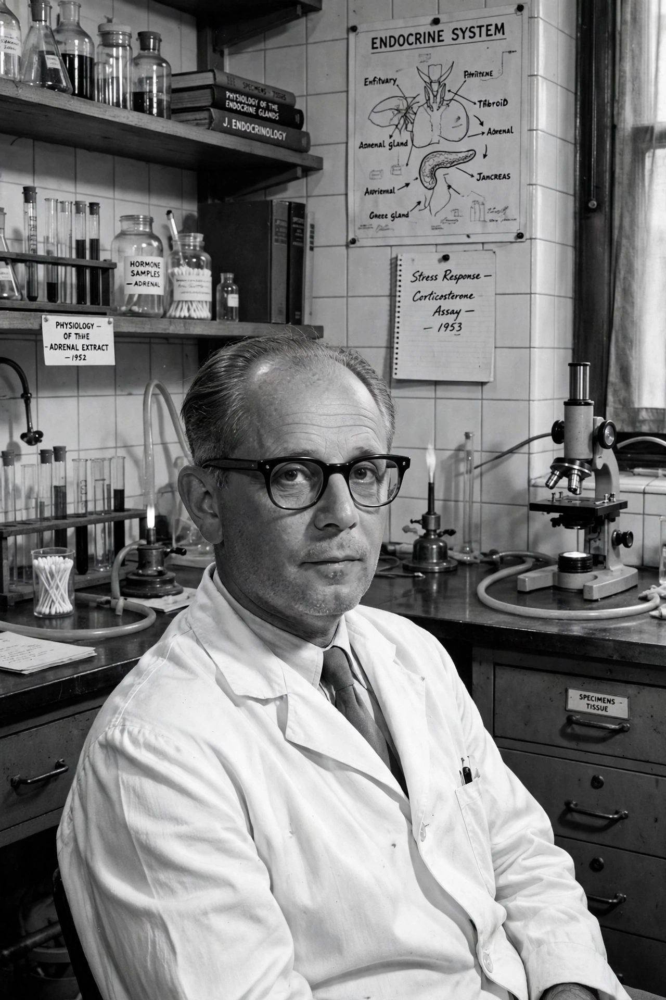

| Hans Selye | |
|---|---|
 | |
| Born | 26 January 1907, Vienna, Austria-Hungary |
| Died | 16 October 1982 (aged 75), Montreal, Canada |
| Nationality | Austro-Hungarian-born Canadian |
| Known for | General adaptation syndrome; biological theory of stress |
| Fields | Endocrinology |
Hans Selye (Hungarian: Selye János; 26 January 1907 – 16 October 1982) was an Austro-Hungarian-born Canadian endocrinologist who pioneered the scientific study of stress in biology and medicine. His 1936 letter to the journal Nature, "A syndrome produced by diverse nocuous agents", introduced the idea that the body responds to diverse threats with a common, stereotyped physiological reaction, which he later developed into the general adaptation syndrome (GAS).
Selye was born in Vienna in 1907 and grew up in Komárom, Hungary (now Komárno, Slovakia). He studied medicine at the German University of Prague, graduating in 1929, and earned a doctorate in organic chemistry. After fellowship work at Johns Hopkins University in the United States, he settled in Canada in 1932, joining McGill University in Montreal. He later founded and directed the Institute of Experimental Medicine and Surgery at the University of Montreal (1945), and in 1976 founded the International Institute of Stress.
Selye's foundational experiments (1936) exposed rats to diverse noxious agents — cold, surgical injury, excessive exercise and injections of various substances — and observed a consistent triad of changes: enlargement of the adrenal cortex, shrinkage of the thymus and lymphatic tissue, and gastrointestinal ulceration. From this he proposed that the organism's response to any stressor unfolds in three stages:
Selye called the diseases that can result from chronic stress "diseases of adaptation", and later distinguished harmful distress from beneficial "eustress". His popular books, including The Stress of Life (1956) and Stress Without Distress (1974), brought the word "stress" — borrowed from physics and engineering — into everyday medical and popular vocabulary.
Selye's work founded the modern physiology of the stress response and stimulated research on the hypothalamic–pituitary–adrenal (HPA) axis and glucocorticoid hormones. Later researchers criticised the GAS as overly non-specific, arguing that different stressors evoke partly distinct responses and that psychological appraisal strongly shapes physiological outcomes. Historians have also documented Selye's long consulting relationship with the tobacco industry, which funded stress research in ways that served industry interests. Nevertheless, Selye remains widely regarded as the "father of stress research"; he was nominated for the Nobel Prize many times without receiving it.